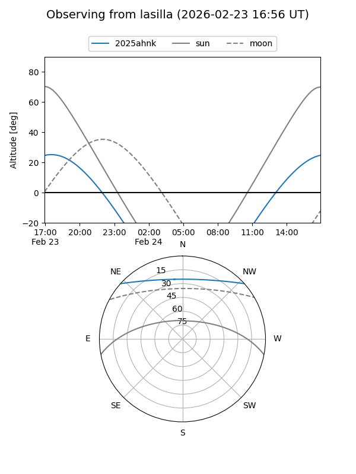
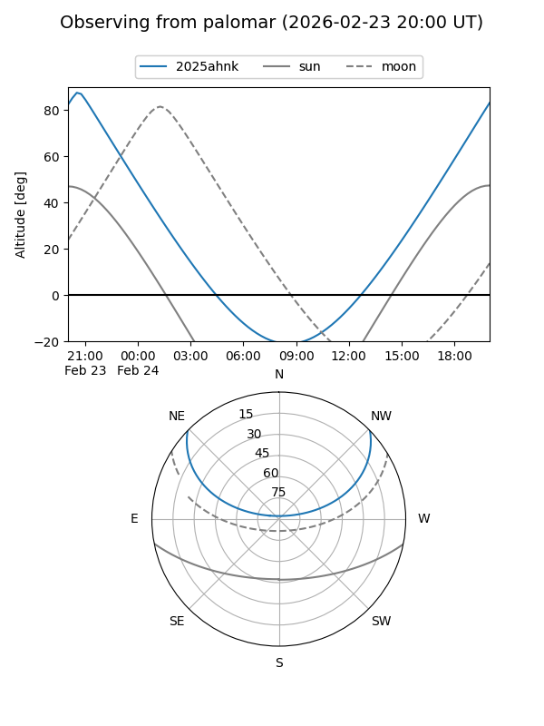
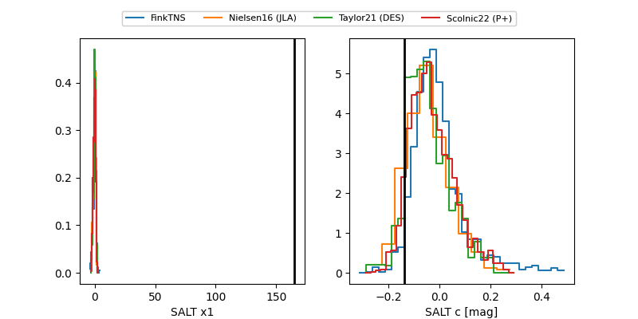

2025ahnk
Target 2025ahnk at 2025-12-21 03:22
Aliases and brokers:
FINK: fink-portal.org/ZTF25acidvxi
Lasair: lasair-ztf.lsst.ac.uk/objects/ZTF25acidvxi
ALeRCE: alerce.online/object/ZTF25acidvxi
TNS: wis-tns.org/object/2025ahnk
YSE: ziggy.ucolick.org/yse/transient_detail/2025ahnk
alt names
ZTF25acidvxi (ztf,fink_ztf)
2025ahnk (tns,yse)
Coordinates:
equatorial (ra, dec) = 345.6135,+35.39534
equatorial (HMS+DMS) = 23:02:27.25,+35:23:43.21
galactic (l, b) = (99.1272,-22.38877)
Flags:
Photometry:
last ztfg=20.01
1 ztfg detections
Lightcurve

Visibility


Additional plots
